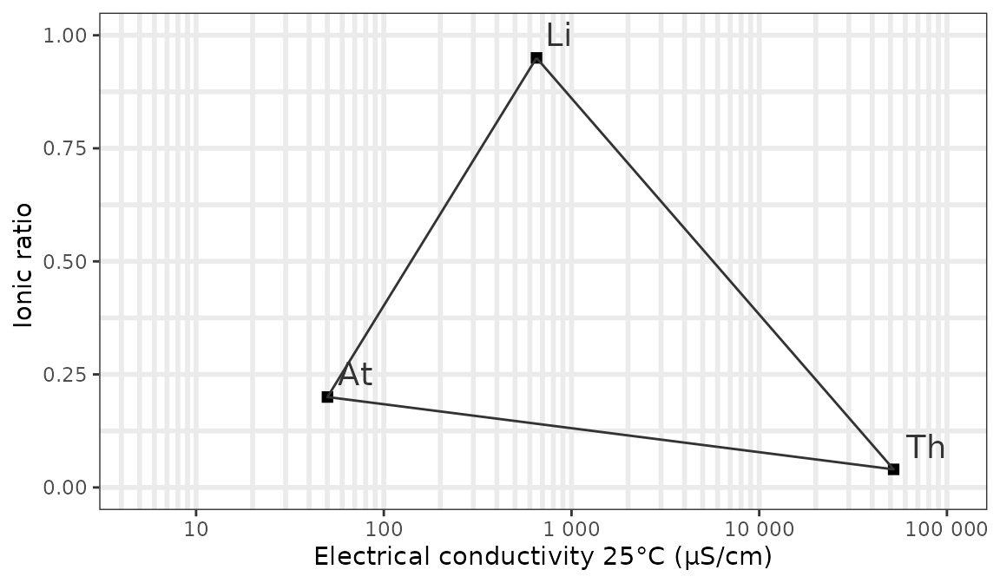
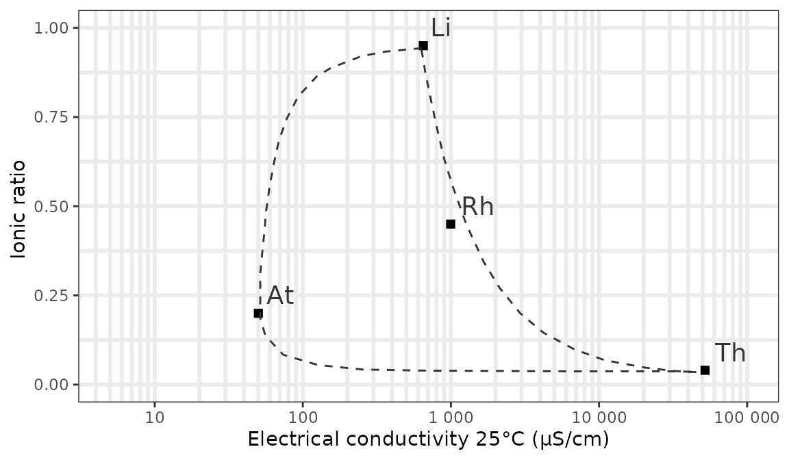
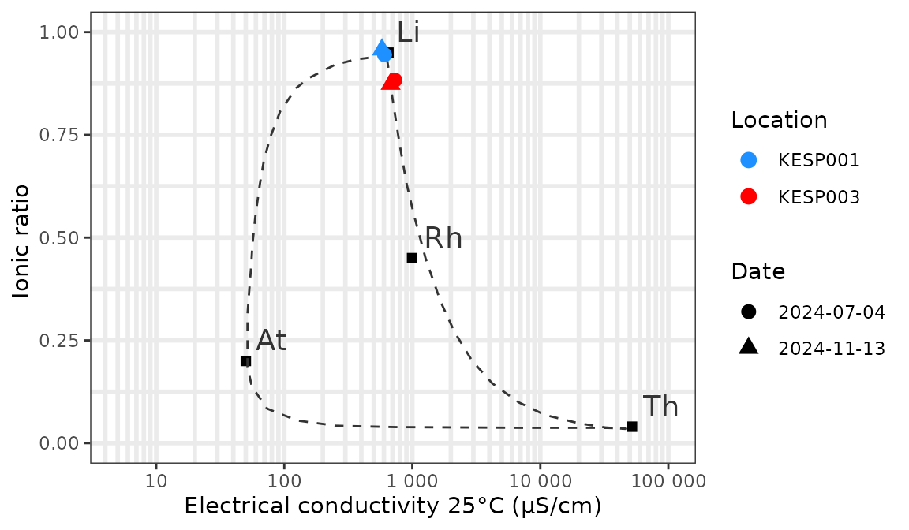

Creating plots based on hydrochemical data
Source:vignettes/v230_chem_plots.Rmd
v230_chem_plots.RmdGeneral note: the below vignette contains frozen output of 7 Nov 2025. This makes it possible to build the package with vignettes without access to the Watina data warehouse.
Retrieve chemical data from Watina
We use the get_chem() function to retrieve hydrochemical
data. The example requests available hydrochemical data since 2024 from
locations in the area ‘Kesterbeek’ and saves it locally
(collect = TRUE):
watina <- connect_watina()
my_chem_data <-
get_locs(watina, area_codes = "KES") %>%
get_chem(watina, "1/1/2024", collect = TRUE)
my_chem_data
#> # A tibble: 272 x 10
#> loc_code date lab_project_id lab_sample_id chem_variable value
#> <chr> <date> <chr> <chr> <chr> <dbl>
#> 1 KESP001 2024-07-04 0 42052 Al 0.050
#> 2 KESP001 2024-07-04 0 42052 Ca 109.881
#> 3 KESP001 2024-07-04 0 42052 Cl 11.349
#> 4 KESP001 2024-07-04 0 42052 CondF 599.000
#> 5 KESP001 2024-07-04 0 42052 CondL 606.700
#> 6 KESP001 2024-07-04 0 42052 Fe 2.788
#> 7 KESP001 2024-07-04 0 42052 HCO3 375.292
#> 8 KESP001 2024-07-04 0 42052 K 0.970
#> 9 KESP001 2024-07-04 0 42052 Mg 8.960
#> 10 KESP001 2024-07-04 0 42052 Mn 0.792
#> # … with 262 more rows, and 4 more variables: unit <chr>,
#> # below_loq <lgl>, loq <dbl>, elneutr <dbl>We will use this dataset to demonstrate the plotting options available in the Watina package.
Plot the ionic ratio against the electrical conductivity (Van Wirdum)
This diagram, devised by Geert Van Wirdum, shows the chemical similarity of a water sample to references samples such as atmocline water (rainwater), thalassocline water (seawater) and lithocline water (calcium rich, fresh groundwater). The diagram plots the ionic ratio, that is (as equivalent concentrations), against the logarithm of the electrical conductivity at 25°C.
The electrical conductivity is available for most samples in Watina,
but we need to compute the ionic ratio. We could do
this manually for each sample but the watina package also
contains a calculate_ir() function that can be applied
directly to the output of the get_chem() function to
calculate the ionic ratio:
my_chem_data_vanwirdum <- calculate_ir(my_chem_data)The obtained dataset is a wide table with the following fields
(namely all the fields from the input dataset and a new field
ir that contains the calculated ionic ratio):
names(my_chem_data_vanwirdum)
#> [1] "loc_code" "date" "lab_project_id" "lab_sample_id"
#> [5] "elneutr" "chem_variable" "value" "unit"
#> [9] "below_loq" "loq" "ir"Now we can create the diagram of the ionic ratio against the (log of)
electrical conductivity at 25°C (the so called Van Wirdum diagram) with
the ggplot_vanwirdum_background() function.
This function will create the background of a Van Wirdum diagram, with reference points for lithotrophic water (Li), atmotrophic water (At), thalassotrophic water (Th) and optionally molunotrophic water (Rh - polluted water as found in the Rhine).
# background with standard options:
ggplot_vanwirdum_background()
We can show the mixing contours of the reference points with a curve
instead of a line and plot the reference point for polluted river water
using respectively the contour and rhine
arguments:
ggplot_vanwirdum_background(
contour = "curve",
rhine = TRUE
)
Now let’s add our own data for the valley of the Kesterbeek. In this example we plot 2 locations that were sampled twice in 2024:
# get the conductivity data
my_chem_data_vanwirdum <- my_chem_data_vanwirdum %>%
filter(chem_variable == "CondL") %>% # CondL = conductivity in the lab
select(loc_code, date, conductivity = value, ir)
# add your own data with EC as x and IR as y and format as you wish
ggplot_vanwirdum_background(
contour = "curve",
lang = "en",
rhine = TRUE
) +
geom_point(
data = my_chem_data_vanwirdum %>% head(n = 4),
aes(
x = conductivity, y = ir,
colour = loc_code,
shape = as.factor(date)
),
size = 3
) +
scale_colour_manual(name = "Location", values = c("dodgerblue", "red")) +
scale_shape_discrete(name = "Date")
All the usual options of ggplot2 are available to
customize the layout of the plot.